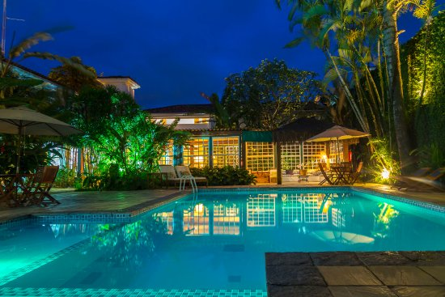
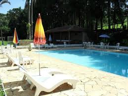

O local exato para passar um tempo com sua família
Pousada Recanto da Natureza
Lugar perfeito para seu lazer!


A Pousada Recanto da Natureza atua de sexta até segunda, a pousada está aberta nos feriados também.
Temos varias opções de quartos para você, basta acessar a aba "Hospedagens".
Queremos proporcionar momentos de lazer para você e sua família.
Os clientes aqui encontram café da manha colonial, restaurante, passeios no lago, piscina, oficina de pesca, trilhas na floresta, sala de jogos, garagem, passeio a cavalo e campo de futebol e volêi.